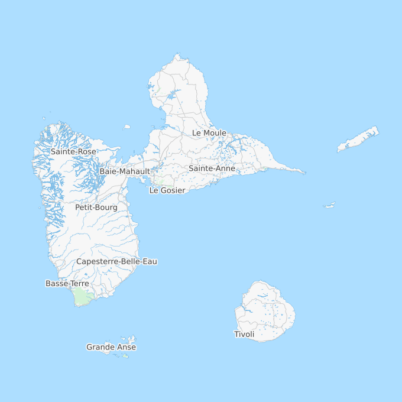

Story of my life
What I was
I was born in Guadeloupe, an island located in the French West Indies. I lived there during my first 18 years, more precisely in the city of Capesterre Belle-Eau (97130).
Inside a district close to Mother Nature, i was raised with a strict but open education. Respect and Labour were the main moral values.
This education made of my scolarship a great succes, awarded by a Science Baccalauréat specialized in Maths plus an Engineer degree specialized in Software engineering. It also helped me to do a lot of activities like Sport (basket-ball, snowboard, ping-pong, chess) or Culture (Music, Mrench language mastering, Scrabble). Those activities made me meet a lot of extraordinary people that inspired me a lot, even today.
Very early, i showed an interest in Logics and Maths (maths competition, logigrams and other logic games) but also for Physics (Astrophysics, Waves physics). I also felt in love early with console video games since the launching of the NES but also with computer video games since Windows 95 (Tomb Raider 1, Caesar 3, Command and Conquer, Baldur's Gate, etc...). By extension, I also started to show an interest in computer science, for instance to encode music tracks (from WAV format to MP3), burn CDs or download files (Napster, Kaza) when Internet wasn't well known.
As the same time as my studies, I built a strong personal and professional network thanks to the practice of multiple activities, mais surtout d'un bon relationnel. Toutes ces rencontres ont forgé chez moi une ouverture d'esprit et une approche très particulière et très philosophique de la Vie.
Ce que je suis
Aujourd'hui, après mes études et quelques années d'expériences professionnelles en tant que développeur en France :
- J'ai pris conscience d'une bonne partie des usages d'Internet dans la société actuelle.
- J'ai pris conscience des enjeux pour l'avenir de la Révolution Numérique.
- J'ai pris conscience des difficultés de la transformation digitale notamment pour les professions libérales, TPE, PME, association et collectivités.
- J'ai donc fini par accepter l'ignorance du Web par le Grand Public.
- J'ai pris conscience de l'importance de l'éducation et de la veille dans ce domaine.
- J'ai pris conscience de l'obligation pour une Nation ou une Organisation de maîtriser ses Data et sa technologie pour conserver de sa culture.
- J'ai pris conscience de l'utilité de ma passion pour le Web dans la Révolution Numérique.
- Mais j'ai surtout pris conscience que c'est bel et bien de l'avenir réel dont il s'agissait.
Après beaucoup d' organisation et de développement personnel, j'ai choisi de me mettre à mon compte et proposer mes services de prestations en développement, formation, conseil et coaching dans le domaine du Web pour les entreprises et les particuliers. Parallèlement à cela, je cherche également à développer certaines idées ou accompagner des porteurs de projets. Pour plus d'informations, me contacter.
Ma curiosité actuelle est dirigée vers l'Histoire des Civilisations et l'Histoire des Sciences. En extérieur, je pratique majoritairement de la Salsa (cubaine en grande partie) tandis qu'à mon domicile, il m'arrive encore de pratiquer les jeux-vidéos PC, notamment League of Legends (favoris : Irélia et Soraka) et parfois des jeux indépendants sur Steam.
Ce que je vais devenir
 Après plusieurs années de prestations digitales me permettant comprendre d'avantage de problématiques, j'aurai obtenu un carnet d'adresse et une organisation personnelle me permettant de propulser Webodex à l'échelle internationale. Pour en savoir plus sur ce projet, visitez le site officiel.
Après plusieurs années de prestations digitales me permettant comprendre d'avantage de problématiques, j'aurai obtenu un carnet d'adresse et une organisation personnelle me permettant de propulser Webodex à l'échelle internationale. Pour en savoir plus sur ce projet, visitez le site officiel.
En terme d'activités personnelles, j'aurai également repris la Salsa et le Snowboard de manière régulière, tout en continuant à explorer d'autres activités culturelles : dégustation de Spiritueux (Rhums Vieux, Whiskeys, Cognacs), dégustation de fromages, dégustation de Cigares et Botanique.
Je consacrerai également d'avantage de temps pour mes Proches, et partagerai ma vie avec quelqu'un qui a autant d'ambitions que moi, de vraies valeurs à défendre et surtout une confiance infaillible.
Phone
+33 6 61 64 82 20Address
58 rue Périer92120 Montrouge
France